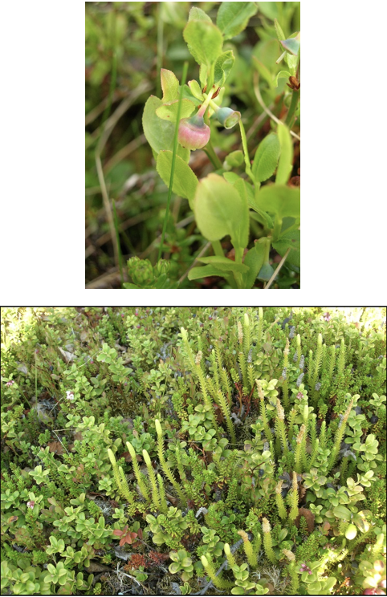

Chapter 4 Examples and Challenge Questions
In this section, we will review a field based experimental design example. There are challenge questions to answer.
We will also introduce tools to generate randomised experimental designs - this is a good trick to have up your sleeves!
4.1 Designing your first experiment
You are challenged to design an Arctic field manipulation experiment to evalauate UV-B radiation and increased CO2 impacts on plant growth.
Context: an arctic tundra study Increasing ultraviolet-B (+UV-B) radiation from ozone depletion (the arctic ozone hole) Increasing atmospheric CO2 (+CO2) from anthropogenic emissions For plants: +UV-B potentially harmful, +CO2 potentially beneficial
Hypotheses Elevated (+) UV-B radiation will reduce the growth of arctic plants Elevated (+) \(CO_{2}\) will increase the growth of arctic plants

The resources available to you are constrained. The arctic research station has given permission for 16 plots (each 2m x 2m) in the natural vegetation nearby.
One +UV-B plot (2m x 2m) costs £4000 (this provides the UV-B lamps, frame, power and control system, wooden walkways around the plots) One \(+CO_{2}\) plot (2m x 2m) costs £6000 (this provides a CO2 release system, CO2 control and covers CO2 purchase costs, wooden walkways around the plots) One control plot (2m x 2m) costs £200 (marking posts, wooden walkways around the plots)
You have a budget of £61,000
Design an experiment to test the hypotheses (i.e. the design of the plots and treatments including replication, not what measurements you will take - which will be plant growth rates….). Think hard about this. How many treatments do you have? How many plots/treatment would you like to allocate? Is this possible? Will this be a balanced design, given your max budget? If it isn’t, what rule can you use to allocate them replicates to treatments?
Write an answer down, before moving to the next section. We’ll provide the answer separately!
4.2 Using R to generate Experimental Designs
This is the place to stop for a moment and organise your R-course life. My suggestion is to do the following.
Create an Experimental Design folder on your computer. Put a data folder inside that. Use RStudio to create an RStudio Project file inside the Experimental Design folder. This will be the only place you need to focus for this mini-module.
Now, let’s set up a script to do build this experimental design and actually generate soome data and do an analysis.
As with every script last semester, we start with a preamble and some libraries
# Designing experiments with R: and introduction
# MY NAME
# DATE
#libraries I need
library(tidyverse)
library(ggfortify)
library(agricolae)
library(car)
library(gmodels)
library(visreg)That’s alot of packages, but you’ll see how we use them for designing and then analysing data.
To design and experiment, we are going to use the design.csd function from the agricolae package, which we used last term to help with the tukey tests. It does WAY MORE!
This package has a great online help resource: https://myaseen208.github.io/agricolae/articles/Intro_agricolae.html
# use this to make sure the random allocation pattern created for the design is the same for you and me
set.seed(123)
# define the treatments
treatments <- c("Control","UVB","CO2")
# define the design (this does some randomisation for you!)
design <- design.crd(treatments, r = c(6,5,5), serie = 0)
# view the design - note that the actual data are in $book
glimpse(design)## List of 2
## $ parameters:List of 7
## ..$ design: chr "crd"
## ..$ trt : chr [1:3] "Control" "UVB" "CO2"
## ..$ r : num [1:3] 5 6 5
## ..$ serie : num 0
## ..$ seed : int 515190382
## ..$ kinds : chr "Super-Duper"
## ..$ : logi TRUE
## $ book :'data.frame': 16 obs. of 3 variables:
## ..$ plots : num [1:16] 1 2 3 4 5 6 7 8 9 10 ...
## ..$ r : int [1:16] 1 1 1 2 2 2 3 3 4 3 ...
## ..$ treatments: chr [1:16] "UVB" "CO2" "Control" "UVB" ...# grab that book
use_design <- design$book
# show the design
use_design## plots r treatments
## 1 1 1 UVB
## 2 2 1 CO2
## 3 3 1 Control
## 4 4 2 UVB
## 5 5 2 CO2
## 6 6 2 Control
## 7 7 3 CO2
## 8 8 3 UVB
## 9 9 4 CO2
## 10 10 3 Control
## 11 11 4 UVB
## 12 12 4 Control
## 13 13 5 Control
## 14 14 6 Control
## 15 15 5 CO2
## 16 16 5 UVBGreat scott! So, we have 16 plots and we’ve randomly allocated the set of treatments to these plots, with 6 controls, and 5 of the non-control treatments. This is just what we wanted.
Time to move on to the next chapter, but stick with this script! We will come back to this example later.